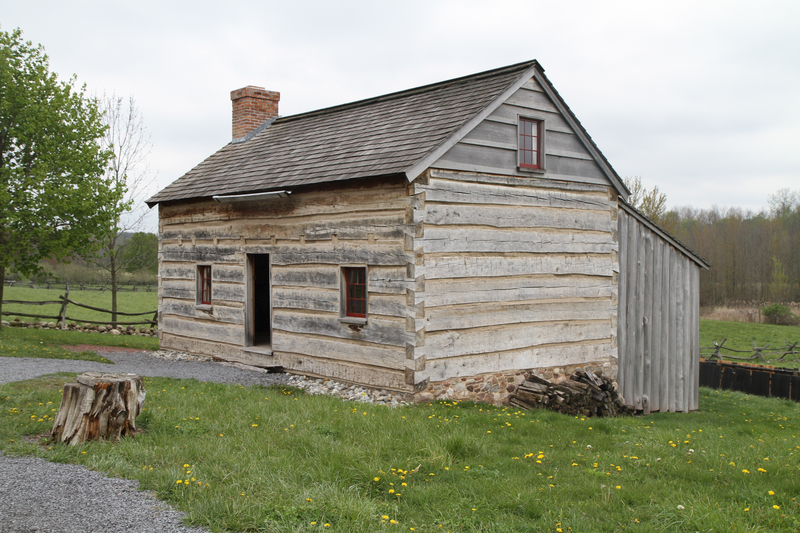

Walk with Our Early Church Leaders
Experience the Church's History Firsthand at Historic Sites
Explore the Church's Historic Sites
Get ready to witness history come alive as we explore the Church's Historic Sites on this trip of a lifetime! One of the most exciting things about this journey is that we'll be visiting places we've only read about in books, and now we get to experience them firsthand and create memories that will last a lifetime. Our itinerary is packed with incredible destinations, each with its unique story to tell. From the Sacred Grove, where Joseph Smith saw the First Vision, to Hill Cumorah, where the Book of Mormon was translated, we'll be walking in the footsteps of our early Church leaders. Other notable sites on our list include the Whitmer Farm, where the Church was officially organized, the Grandin Building, where the first copies of the Book of Mormon were printed, and the Priesthood Restoration Site, where the Aaronic and Melchizedek Priesthoods were restored. We'll also be visiting Joseph Smith's Birthplace, Historic Kirtland, Historic Nauvoo, Carthage Jail, and the Mormon Trail Center at Historic Winter Quarters, where we'll get to learn more about the history and legacy of the Church. And of course, no trip to the Church's Historic Sites would be complete without a visit to the iconic Salt Lake Temple, the spiritual heart of the Church. So come join us on this journey of discovery and inspiration, as we explore the Church's Historic Sites and create memories that will last a lifetime.
Palmyra Historic Sites
Nauvoo Historic Sites